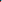

Pixel Shifter
Check out the
existing pixels
and
muck them up a bit
Enlarged view; not real
32pixel by 32pixel
2pixel by 2pixel
Actual bitmaps
32pixel by 32pixel ::
2pixel by 2pixel ::
Data about the image